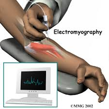
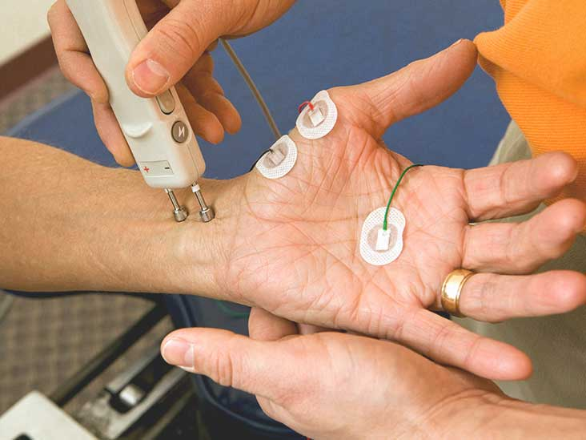
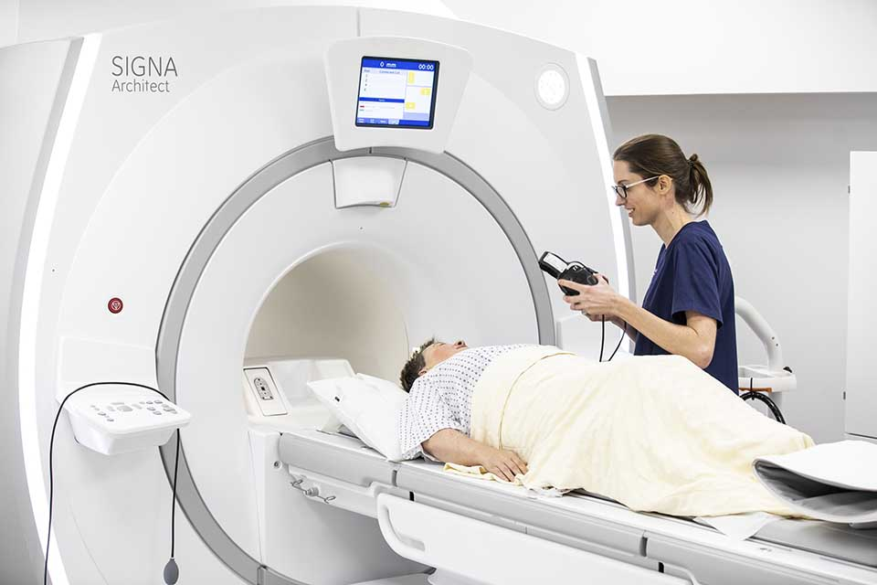
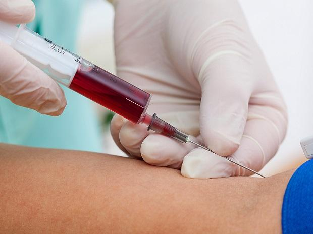
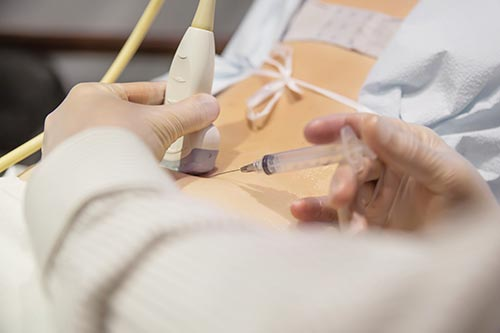
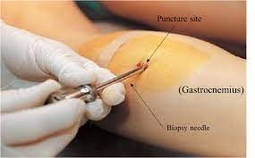

Electromyogram
Electromyogram
EMG test evaluates the electrical activity of the muscles under contraction and relaxation.

Nerve Conduction Study
Nerve Conduction Study
Nerve conduction study measures the ability of the nerves to send impulses to muscles in the body and helps to diagnose nerve damages.

MRI
MRI
MRI produces detailed images of the brain and spinal cord revealing the spinal cord tumors, herniated disks in your neck, or other conditions responsible for symptoms.

Blood and Urine test
Blood and Urine test
These tests are used to analyze thyroid and parathyroid disease, vitamin B12 deficiency, hepatitis, and Creatine kinase (CK, a muscle enzyme released when muscles are injured).

Spinal Tap
Spinal Tap
Spinal tap (lumbar puncture) involves removing a sample of spinal fluid used to examine the abnormal cells.

Muscle biopsy